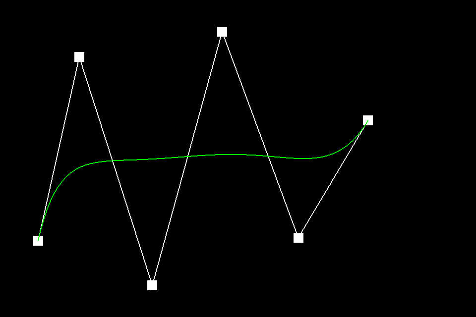
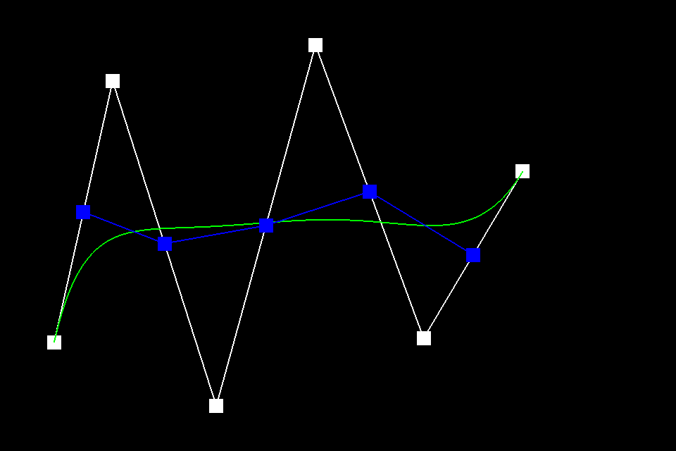
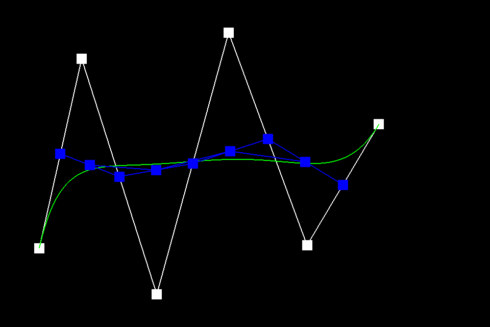
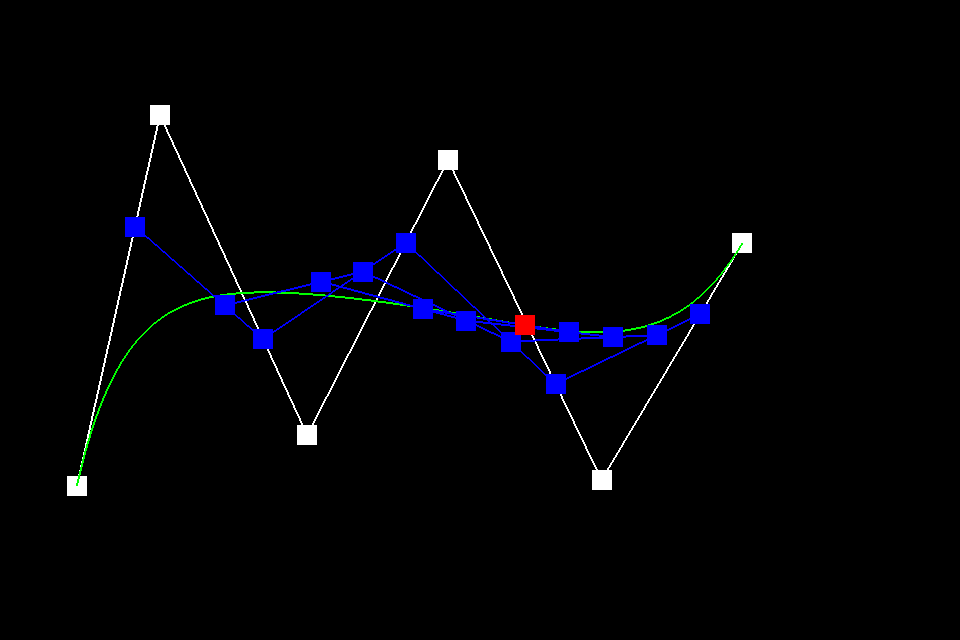
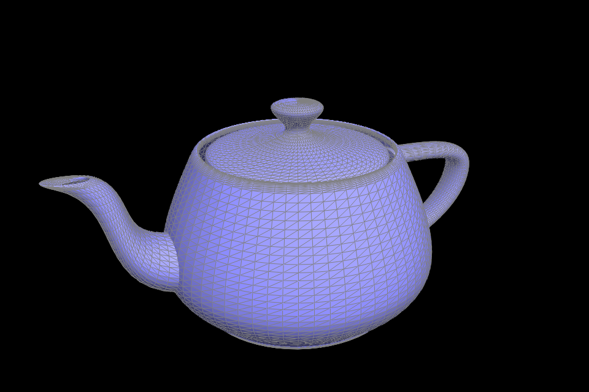
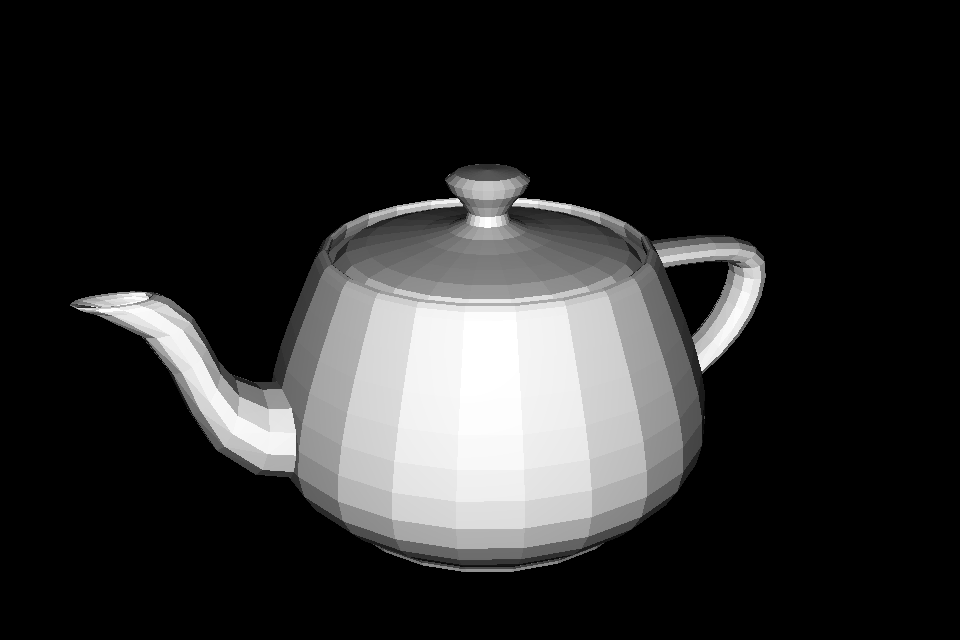
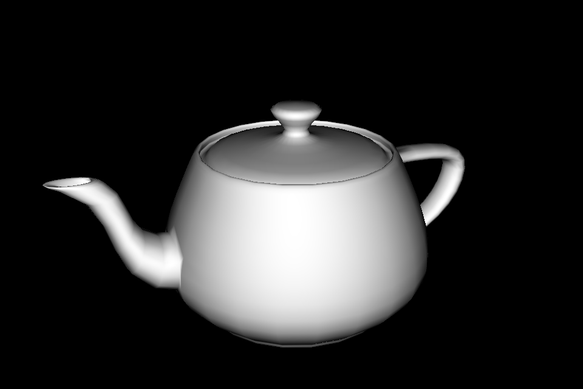
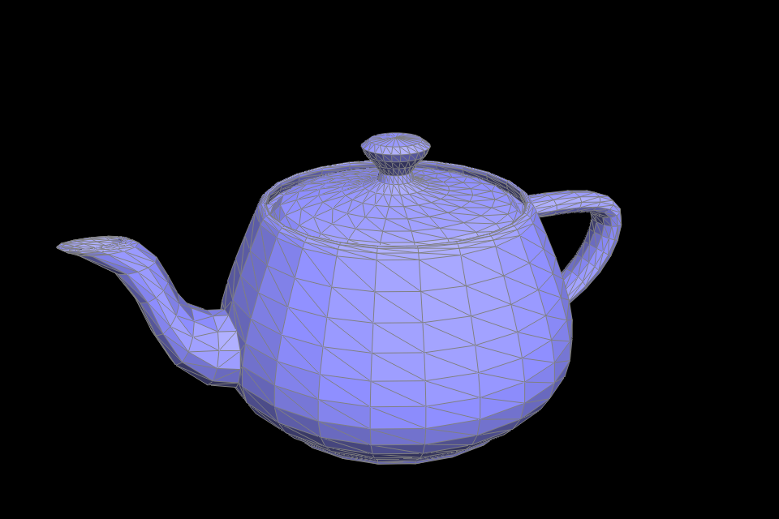

Homework 2:
Webpage address:
cal-cs184-student.github.io/hw2-alexdils-writeup/
Code repository:
github.com/cal-cs184-student/hw2-alexdils
Task 1
I implemented one step of de Casteljau evaluation by linearly interpolating each adjacent pair of control points. For each evaluation, I keep the same parameter \(t \in [0,1]\) at every level. I used the following interpolation rule:
In
evaluateStep
, I loop through adjacent pairs, calculate their interpolated positions, and append each result to a new vector. I return this vector so the viewer can repeat the operation.
To demo, I created a curve with six control points in
bzc/curve6.bzc
. I used (0.12, 0.24), (0.25, 0.82), (0.48, 0.10), (0.70, 0.90), (0.94, 0.25), and (1.16, 0.62). I captured every evaluation level at \(t = 0.5\), with the complete curve shown in green. The wider-than-square viewer permits the last x coordinate to exceed 1.



I then moved the third control point from (0.48, 0.10) to (0.48, 0.32) and the fourth from (0.70, 0.90) to (0.70, 0.75). I used the scroll control to change \(t\) from \(0.5\) to \(0.7\). I observed that moving the control points changed the shape of the curve, while changing \(t\) moved the evaluated point along it.

Task 2
I extended de Casteljau evaluation to Bezier surfaces by applying the same interpolation to 3D control points in two stages. I first evaluate each row of the control-point grid at \(u\). I then use those resulting points as the control points of the moving Bezier curve shown in lecture and evaluate it at \(v\). This gives one point on the surface at \((u,v)\):
In evaluateStep, I interpolate adjacent Vector3D points using the supplied parameter. In evaluate1D, I copy the input points and repeat this step until only one point remains. In evaluate, I call evaluate1D on every row with \(u\), collect the results in a vector, and call it once more on that vector with \(v\). I keep the original control points unchanged.
I evaluated the patches in bez/teapot.bez with this implementation:

bez/teapot.bezTask 3
I calculate a vertex normal by combining the normals of all triangles incident to that vertex, weighted by their areas. I start from the vertex's outgoing halfedge and use twin()->next() to move around the vertex. For each triangle, I take the cross product of the two edge vectors that start at the vertex:
I leave each cross product unnormalized before adding it to the sum. Its magnitude is twice the triangle's area, so larger triangles contribute more to the final direction. I normalize the sum once at the end. I use HalfedgeCIter because Vertex::normal() is a const function, and I skip virtual boundary faces. If the sum is zero, I return a zero vector.
I compared dae/teapot.dae with flat shading and with area-weighted vertex normals. With flat shading, I can see the individual triangles across the body and lid. With vertex normals, the lighting changes smoothly across those surfaces. I used Q to toggle between the two shading modes.


Task 4
I implemented an edge flip by replacing the shared diagonal of two adjacent triangles with the diagonal between their opposite vertices. In my code, I label the original endpoints \(a,b\) and the opposite vertices \(c,d\). The two triangles change as follows:
I first save the six halfedges, four vertices, and two faces around the edge. I reuse the two halfedges of the original diagonal for the new edge \((c,d)\), then use setNeighbors to assign the next, twin, vertex, edge, and face pointers of all six halfedges. I also update the representative halfedges of the four vertices, the flipped edge, and the two faces. The surrounding edges keep their existing twins and edge objects.
Then, I return the original edge immediately if it is a boundary edge. For an interior edge, I only reassign pointers in this local neighborhood, so the operation takes constant time and does not create or delete vertices, edges, faces, or halfedges. I return the same edge iterator, which now represents the new diagonal.
To check my pointer assignments, I verified that each face forms a three-halfedge cycle, twins point back to each other, and traversing a vertex's outgoing halfedges visits all of its incident edges. I flipped the same edge 100 times, checked that boundary flips leave the pointers unchanged, and tested 300 flips on the teapot while checking connectivity, element counts, and vertex positions after each flip
